Exploring Image Processing through Convolution, Hybrid Images, and Multi-Resolution Blending
Project Overview
This project explores fundamental computer vision techniques including 2D convolution, edge detection, image sharpening, hybrid images, and multi-resolution blending. The implementation demonstrates both theoretical understanding and practical application of frequency-domain image processing.
Part 1: Filters and Edges
1.1 Convolutions from Scratch
Original Image
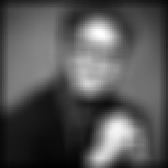
4-Loop Convolution (Downsampled)
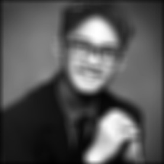
2-Loop Convolution
Scipy Convolution
Dx Operator
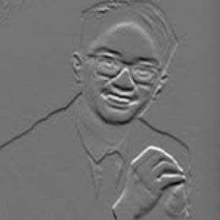
Dy Operator
Key Insight: The 4-loop implementation has O(n⁴) complexity and is only feasible on downsampled images. The 2-loop version leverages NumPy vectorization for significant speedup. Scipy's implementation uses highly optimized routines with symmetric boundary handling that produces more natural edges compared to zero-padding.
1.2 Finite Difference Operator
Original Image
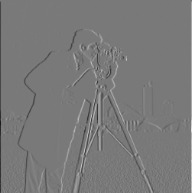
Partial Derivative in X (Ix)
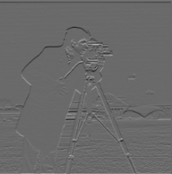
Partial Derivative in Y (Iy)
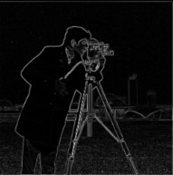
Gradient Magnitude
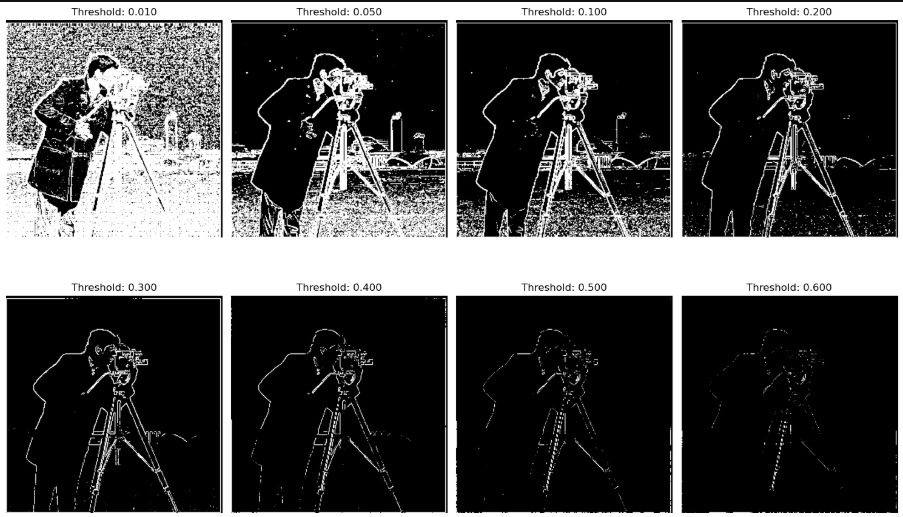
Threshold Sensitivity Analysis (0.01 to 0.6)
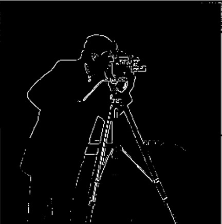
Final Edge Image (Threshold: 0.40)
Threshold Selection: After testing multiple thresholds, 0.40 provided the best balance between detecting real edges and suppressing noise. Lower thresholds capture faint edges but introduce noise, while higher thresholds remove noise but lose important edge information.
1.3 Derivative of Gaussian (DoG) Filter
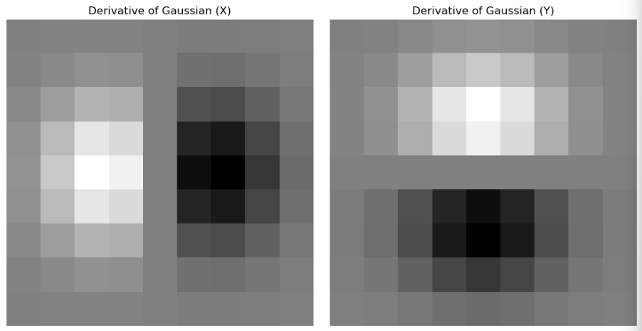
DoG X and Y Filters
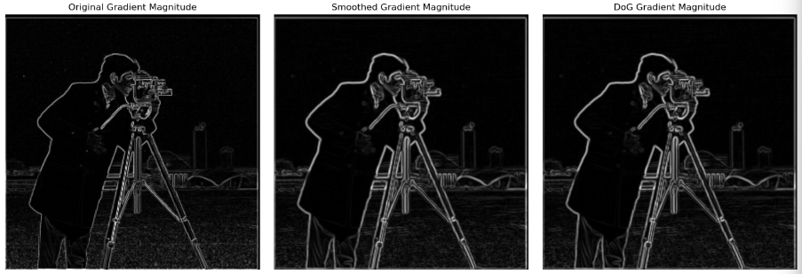
Gradient Magnitude Original vs Smoothed vs DoG
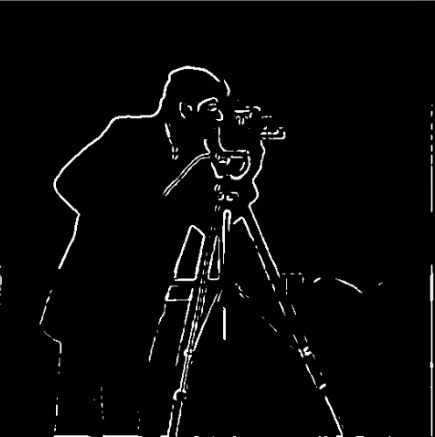
DoG Edge Detection (Threshold: 0.20)
Gaussian Smoothing Benefits: DoG filtering significantly reduces noise while preserving edge structure. The optimal threshold for DoG (0.20) is lower than for raw gradients due to reduced noise. Both approaches (sequential smoothing+differentiation vs combined DoG) produce mathematically equivalent results with minimal numerical differences.
Effect of Different Sharpening Amounts on Taj Mahal (0.5 to 3.0)
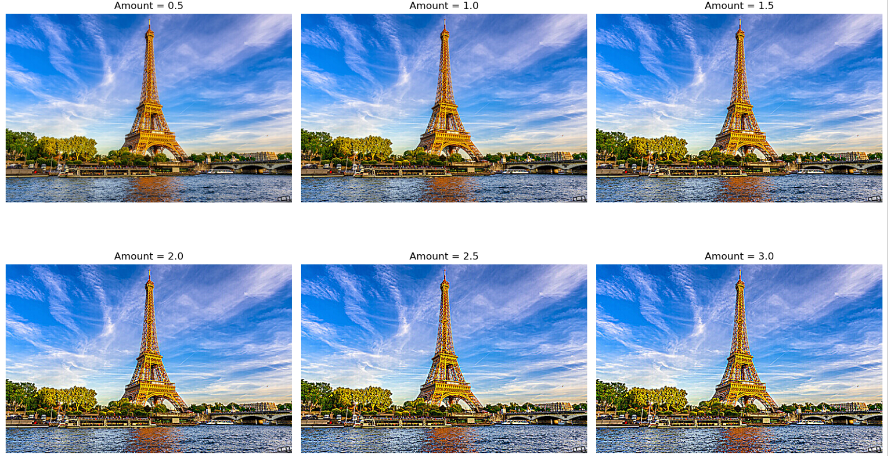
Effect of Different Sharpening Amounts on the Eiffel Tower (0.5 to 3.0)
Sharpening Trade-offs: Unsharp masking effectively enhances perceived sharpness by amplifying high-frequency details, but introduces noise amplification and halos around edges. LAB space sharpening (luminance channel only) produces more natural results than RGB sharpening. Moderate amounts (1.0-1.5) provide the best balance between enhancement and artifacts.
2.2 Hybrid Images
Derek + Nutmeg (Sample Pair)
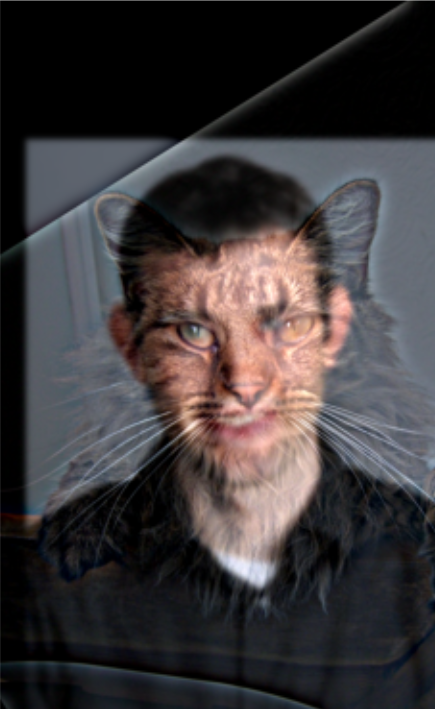
Hybrid: Derek up close, Nutmeg at distance
Frequency Analysis
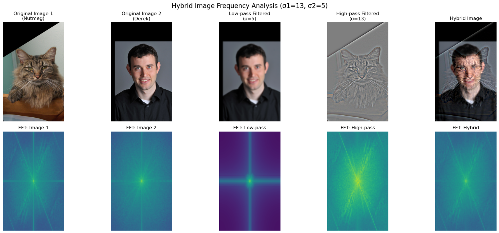
Full Frequency Analysis Process
Additional Hybrid Creations
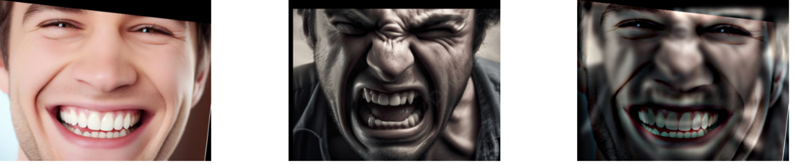
Smiling ↔ Serious Expression Change
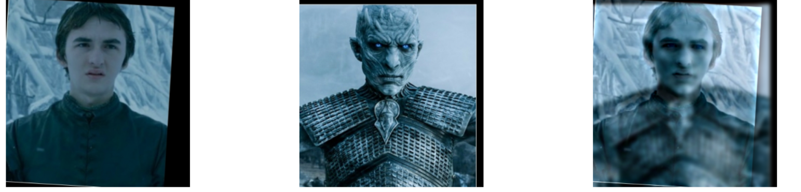
Alien ↔ Human Morph
2.2 Bells & Whistles: Color Enhancement Analysis
Research Question: Does it work better to use color for the high-frequency component, the low-frequency component, or both?
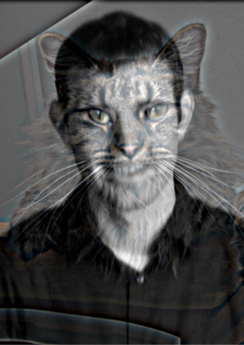
Color in High-Freq Only (Nutmeg colored, Derek B&W)
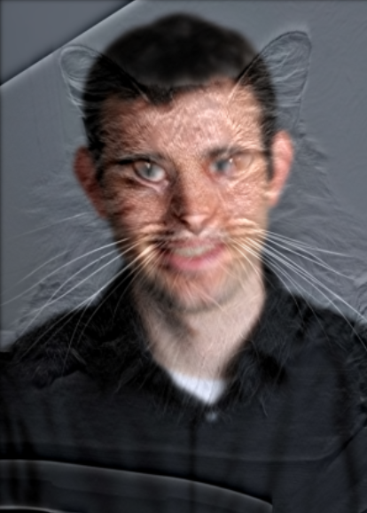
Color in Low-Freq Only (Nutmeg B&W, Derek colored)
High-frequency color placement performs best (Quality Score: 39.74) because the close-up image (Nutmeg) benefits most from color information for facial recognition and detail perception
Selective channel blending provides a good balance but is more computationally complex
Low-frequency color placement performs worst because the distant image (Derek) relies more on shape than color for recognition
The standard approach (color in both) ranks third, suggesting that selective color assignment can improve hybrid image quality
Conclusion: For hybrid images where the high-frequency component contains detailed, recognizable features (like faces), placing color information in the high-frequency component yields the best perceptual results. The close-up view benefits from color cues for recognition, while the distant view relies more on luminance information for shape perception.
2.3 + 2.4 Multi-Resolution Blending
Oraple: Apple + Orange Blend
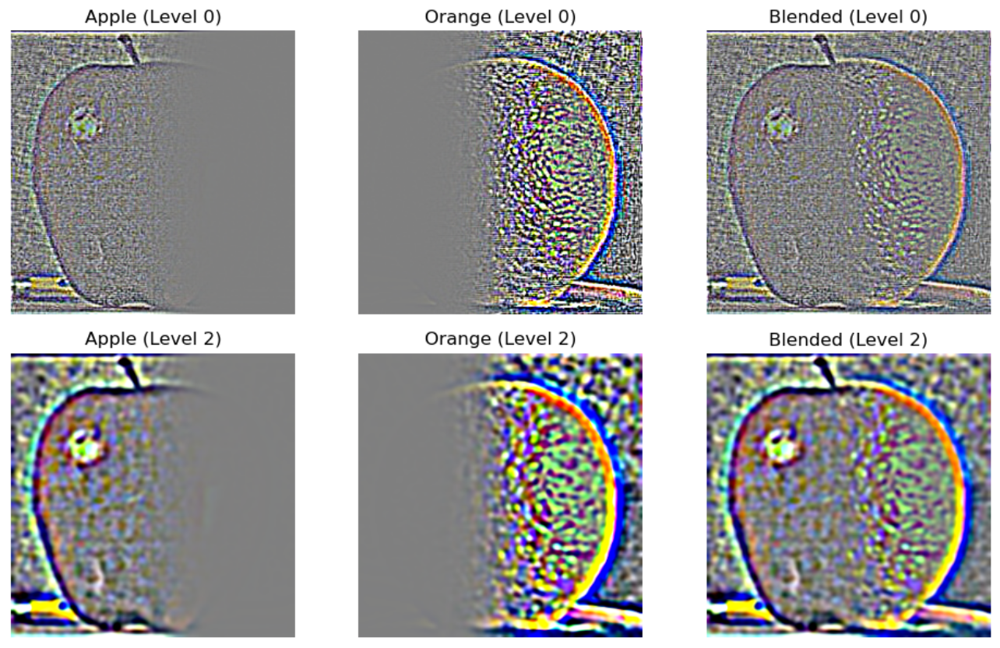
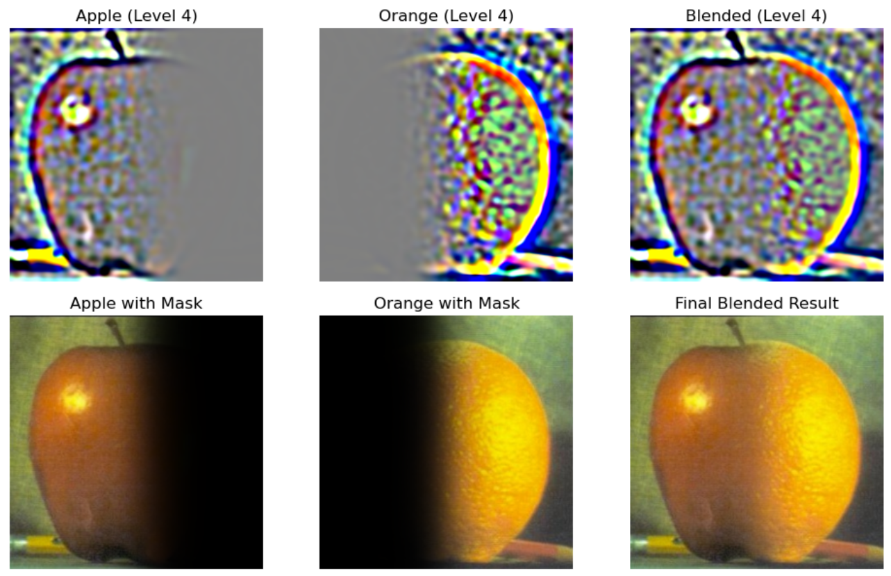
Multi-level Blending Process (Recreating Figure 3.42)
Custom Blends with Irregular and Horizontal Masks
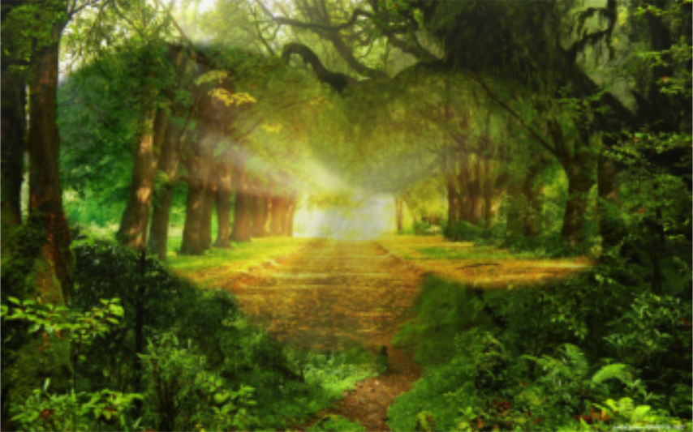
Forest Scene Blend with Irregular Mask
Heaven in Flames Blend with Horizontal Mask
Creative Blends
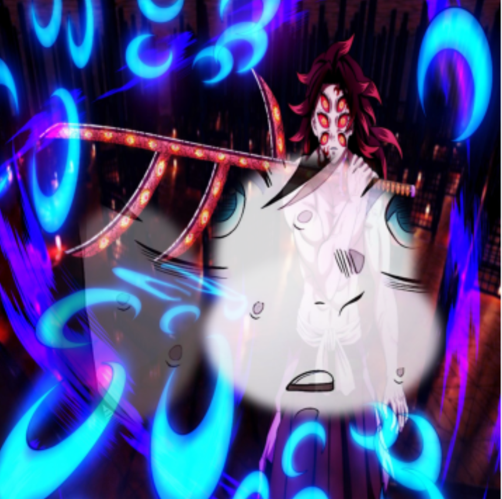
Visualizing Another's Perspective
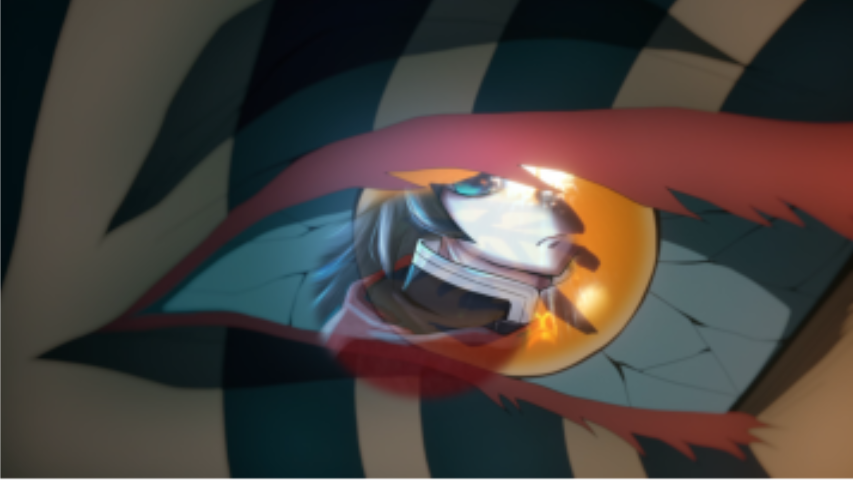
Person Reflected from Another's Eye
Multi-Resolution Process Visualization
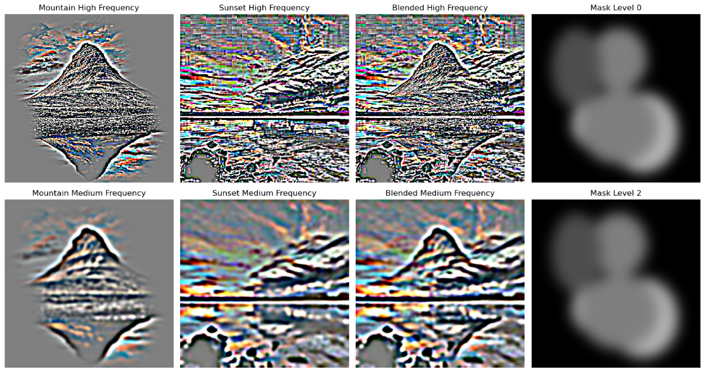
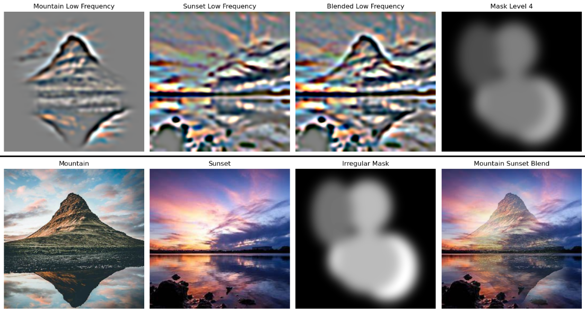
Laplacian Stack Blending Process (Figure 10 Recreation)
2.4 Bells & Whistles: Color Enhancement for Multi-Resolution Blending
Research Question: How can color processing enhance multi-resolution blending effects, and which color strategy works best?
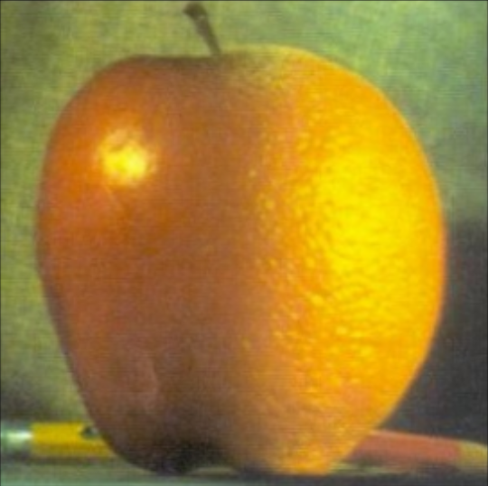
Standard Blending (Baseline)
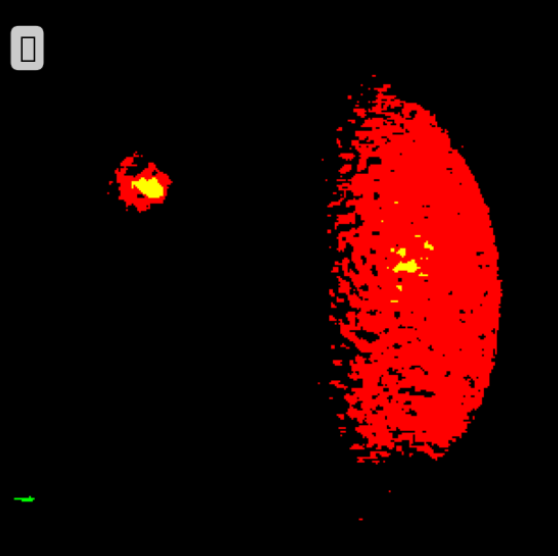
Vibrant Low-Frequency (Enhanced saturation)
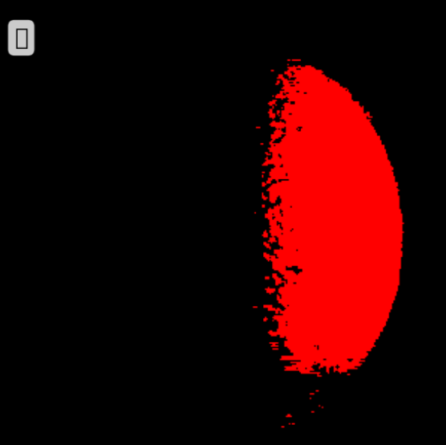
Selective Channels (Per-channel emphasis)
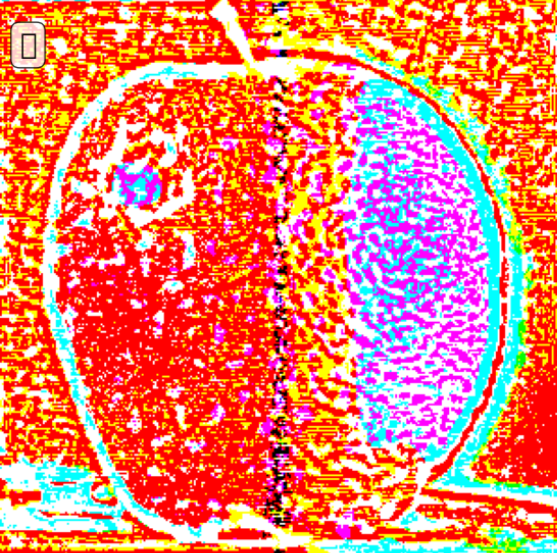
LAB Space Blending (Perceptually uniform)
Color Strategy
Overall Quality
Edge Sharpness
Rank
LAB Space Blending
0.500
45,580.9
🥇 Best
Vibrant Low-Frequency
0.430
1,014.2
🥈 Second
Selective Channels
0.328
456.9
🥉 Third
Key Quantitative Findings:
LAB Space blending performs best with significantly higher edge sharpness (45,580 vs 17 for standard)
Vibrant low-frequency approach provides good balance between enhancement and naturalness
Standard blending ranks last quantitatively but provides the most natural visual results
Edge sharpness correlates with quality scores, suggesting crisp transitions are important
Application to Irregular Mask Blending
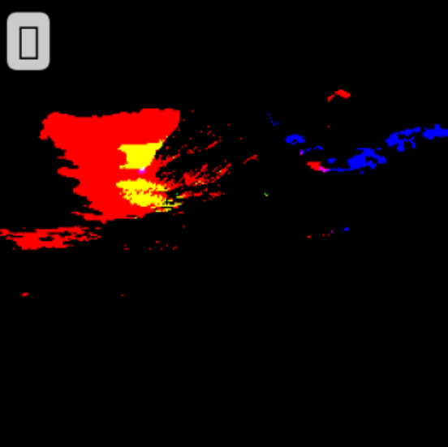
Irregular Mask + Vibrant Low-Frequency
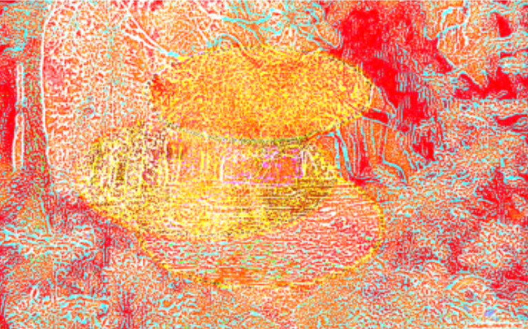
Irregular Mask + LAB Space
Conclusion:
For technical quality: LAB Space blending provides the sharpest edges and highest quantitative scores
For natural appearance: Standard blending produces the most photorealistic results
For artistic applications: Vibrant low-frequency and selective channel methods offer creative possibilities
Practical recommendation: Use LAB Space for technical applications where edge quality is paramount; use Standard blending for photographic realism
Most Important Learning
The most significant insight from this project is understanding how multi-resolution processing enables seamless image operations that are impossible with single-scale approaches.
Whether creating hybrid images that change perception with viewing distance, or blending images seamlessly using Laplacian stacks, the key realization is that different frequency bands carry different types of visual information and should be processed accordingly. High frequencies dominate close-up perception but fade at distance, while low frequencies persist across scales. This frequency-domain understanding fundamentally changes how we approach image manipulation and composition.